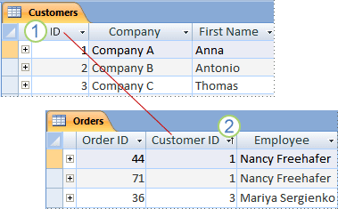

Cara Menentukan Primary Key di Dalam Database

Buat kamu yang sudah malang-melintang di dunia basis data atau database, pastinya sudah tidak begitu asing mengenai istilah primary key. Primary key sendiri jika diartikan merupakan kunci utama atau kunci pertama. maksud dari primary key di dalam database atau basis data adalah sebuah tanda yang digunakan untuk dapat menandai ataupun mengidentifikasi suatu nilai data yang ada di dalam database.
Adanya kode primary key sendiri di dalam database atau basis data merupakan sebuah kode yang sangat penting. Fungsi sebuah primary key di dalam sebuah database adalah untuk memudahkan proses didalam pengolahan data. Selain itu, sebuah primary key juga dapat berperan ketika akan mencari proses data yang dibutuhkan.
Dalam memberikan ketetapan primary key pada sebuah data, maka data tersebut dapat dibedakan mana data yang utama dan mana data yang tidak begitu diperhatikan. Hal ini tentunya sangat penting digunakan pada saat memasukan data-data yang akan digunakan. Maka dari itu, pastinya kita berpikir seperti apa data tersebut dapat disebut sebagai primary key. Untuk dapat mengetahuinya, berikut beberapa cara menentukannya.
1.Hanya satu data yang dijadikan primary key
Seperti yang sudah disebutkan sebelumnya bahwa primary key merupakan sebuah data yang dijadikan patokan pada sebuah data di dalam database. Dengan kata lain, hanya satu data saja yang bisa dijadikan sebuah patokan tersebut. Maka dari itu, ketika kita akan menentukan data mana yang ingin dijadikan primary key, harus dipikirkan matang-matang agar nantinya tidak sering terjadi perubahan.
2.Tidak boleh melebihi batas kolom
Ketika sebuah data telah ditetapkan sebagai primary key, maka data tersebut tidak boleh membuat kolom yang terlau banyak. Maksimal dalam membuat kolom adalah 16 kolom saja. Selain itu, perhatikan juga panjang dari kuncinya. Jangan sampai ukurannya lebih dari 900 byte. Apabila lebih dari itu, maka akan terjadi kesalahan di dalam sebuah basis data.
3.Kolom yang sudah ditandai primary key tidak boleh kosong
Di dalam kolom yang diartikan sebagai primary key, maka definisi primary key tersebut bersifat not null. Artinya, nilai yang terdapat pada kolom yang sudah ditandai sebagai primary key, harus selalu diisi nilai atau tidak boleh sampai kosong. Ketika kolom di dalam primary key tidak diisi, maka akan terjadi error di dalam sebuah database.
4.Tidak boleh ada nilai yang sama di dalam kolom
Harus diperhatikan bahwa di dalam primary key, tidak boleh memasukan data yang sama di dalam satu kolom. Hal ini disebabkan, ketika primary key sudah ditentukan, maka data tersebut adalah kunci ketika nilai data akan dipanggil ke dalam sebuah data. Jika dianalogikan, nomor yang terdapat pada primary key sama dengan sebuah nomor ID yang digunakan pada KTP, nomor seri telepon, nomor absensi, dan data-data lainnya. Oleh sebab itu, bagian primary key merupakan hal yang penting.
5.Data di dalam primary key tidak boleh bertipe BLOB
Meskipun banyak data yang bisa dijadikan sebuah primary key, akan tetapi, tidak semua data dapat dijadikan primary key. Salah satu contohnya adalah data yang dimasukan ke BLOB. BLOB sendiri merupakan kepanjangan dari Binary Large Object. Jika diartika secara pengertiannya, maka BLOB ini merupakan sebuah data yang disimpan pada bagian entitas di dalam sebuah database management system. Di dalam BLOB ini, data yang disimpan berupa data-data yang sifatnya multimedia. Contohnya seperti bisa berbentuk gambar, bisa berbentuk video, atau bisa berbentuk suara. Selain itu, BLOB sendiri juga dapat menmpung data-data yang berbentuk file seperti dokumen dalam bentuk eksistensi apapun.
Nah, untuk BLOB sendiri memang tidak bisa dijadikan sebuah primary data. Sebab, seperti yang sudah disebutkan sebelumnya bahwa primary data lebih bersifat ID pada data tersebut. Sedangkan BLOB menggunakan data yang bisa diubah-ubah terus dan tidak tetap. Maka dari itu BLOB tidak cocok digunakan sebagai primary key.
Itulah 5 cara menentukan primary key di dalam database atau basis data yang akan dibuat. Di dalam sistem basis data sendiri, adanya primary key tentunya sangat membantu di dalam memberikan manfaat basis data. Primary key tersebut dapat dijadikan sebagai ID di dalam sebuah data sehingga data yang dimasukan tidak terjadi duplikasi. Ditambah lagi, dengan adanya primary key ini, sang user atau pengguna dapat lebih cepat memanggil data yang diinginkan hanya dengan menuliskan nilai berdasarkan primary key-nya.
Apabila kamu tertarik membuat basis data yang menggunakan pimary key, kamu bisa pelajari fungsi DBMS basis data, database relasional, cara membuat tabel database MySQL, dan cara membuat database dengan MySQL. Jika kamu mempelajarinya dengan seksama, rajin, dan tekun, maka kamu dapat membuat sebuah database sendiri.